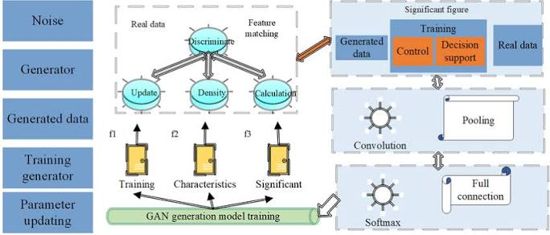

Machine Learning aplicado a Redes de Comunicaciones
El Machine Learning permite optimizar el tráfico, detectar fallos
y mejorar la calidad del servicio en redes de comunicaciones.
Aplicaciones principales
- Gestión inteligente del tráfico
- Detección de anomalías
- Optimización de recursos
Arquitectura del sistema

Ejemplo de red inteligente